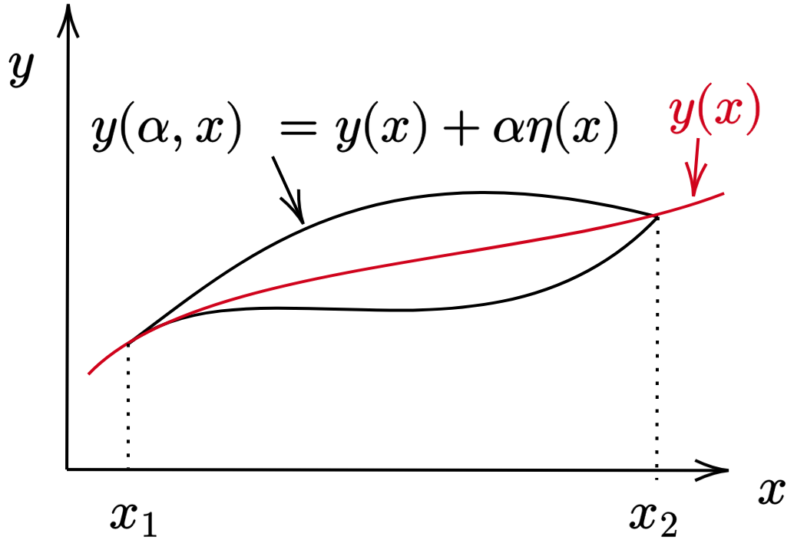

Ray theory can be cast in terms of Fermat's principle, which states that a ray travels in such a way that minimizes its travel time between two points, i.e., \begin{align}\label{eq:fermat} \int_{\vec{x}_1}^{\vec{x}_2} dt = \text{minimum}. \end{align} If the medium has an index of refraction \begin{align}\label{eq:index} n(\vec{x}) \equiv \frac{c_0}{c(\vec{x})}\,, \end{align} where \(\vec{x}\) is the position vector, then the differential travel time is \begin{align}\label{eq:dt} dt = \frac{ds}{c(\vec{x})} = \frac{n(\vec{x})}{c_0} ds\,. \end{align} Substituting Eq. \eqref{eq:dt} into Eq. \eqref{eq:fermat} and noting that \(c_0\) is a constant shows that Fermat's principle amounts to the integral [5, Eq. (3.4-1)] \begin{align}\label{eq:fermat:ds} \int_{\vec{x}_1}^{\vec{x}_2} n(\vec{x}) ds = \text{minimum}. \end{align} In the following section, Eq. \eqref{eq:fermat:ds} is stated in the language of variational calculus.
Reference [4] on this topic contains a brief overview of the same information, and Ref. [5, pp. 90–100] contains a more in-depth discussion. The following derivation of the Euler-Lagrange equation is adapted from Chs. 6 of Ref. [3].
Consider the functional \(J\) of the independent variable \(x\): \begin{equation}\label{functional} J = \int_{x_1}^{x_2} f[y(x),y'(x),\,x]\, dx\,. \end{equation} It is desired to determine the \(y(x)\) that extremizes the functional. To this end, consider a function that is a neighbor to \(y(x)\), \begin{equation}\label{neighbor} y(\alpha, x) = y(0,x) + \alpha \eta(x)\,, \end{equation} where \(\eta(x)\) is continuous and vanishes at \(x_1\) and \(x_2\), so that \(y(\alpha,x)\) shares the endpoints of \(y(x)\):
Inserting the neighboring function into Eq. \eqref{functional} gives \begin{equation}\label{functionala} J(\alpha) = \int_{x_1}^{x_2} f[y(x,\alpha),y'(x,\alpha),\, x]\, dx\,. \end{equation} The functional is now extremized with respect to the parameter \(\alpha\): \begin{equation}\label{extremum} \frac{\partial J}{\partial \alpha}\bigg\rvert_{\alpha=0} = 0\,. \end{equation} The derivative of Eq. \eqref{functionala} with respect to \(\alpha\) is set to zero, \begin{align} \frac{\partial J}{\partial \alpha} &= \frac{\partial }{\partial \alpha} \int_{x_1}^{x_2} f[y(x,\alpha),y'(x,\alpha),\, x]\, dx \notag\\ &=\int_{x_1}^{x_2} \bigg(\frac{\partial f}{\partial y} \frac{\partial y}{\partial \alpha} + \frac{\partial f}{\partial y'}\frac{\partial y'}{\partial \alpha}\bigg)\, dx = 0\,, \label{eq:extremum'} \end{align} where the chain rule has been used to arrive at the second line. Insertion of the neighboring function given by Eq. \eqref{neighbor} into Eq. \eqref{eq:extremum'} yields \begin{equation}\label{Jaref} \frac{\partial J}{\partial \alpha} = \int_{x_1}^{x_2} \bigg[\frac{\partial f}{\partial y} \eta(x) + \frac{\partial f}{\partial y'}\frac{d \eta}{d x}\bigg]\, dx = 0\,. \end{equation} The second term of Eq. \eqref{Jaref} is integrated by parts, i.e., \(\int u\, dv = uv- \int v\, du\), where \(u = \partial f/\partial y'\) and \(dv = d\eta\): \begin{equation} \int_{x_1}^{x_2} \frac{\partial f}{\partial y'}\frac{\partial \eta}{\partial x}\, dx = \color{red!60!black}\frac{\partial f}{\partial y'} \eta(x)\bigg\rvert_{x_1}^{x_2} \color{black} - \int_{x_1}^{x_2} \frac{d}{dx}\bigg(\frac{\partial f}{\partial y'}\bigg)\eta(x) dx\,.\label{Jaref'} \end{equation} The first term of Eq. \eqref{Jaref'} vanishes because \(\eta(x_1) = \eta(x_2) = 0\). Equation \eqref{Jaref} thus reads \begin{equation*} \frac{\partial J}{\partial \alpha} = \int_{x_1}^{x_2} \bigg[\frac{\partial f}{\partial y} - \frac{d}{dx}\bigg(\frac{\partial f}{\partial y'}\bigg) \bigg]\eta(x)\, dx = 0\,. \end{equation*} Since the points \(x_1\) and \(x_2\) can be brought as arbitrarily close together as desired, the integrand itself vanishes for \(\alpha = 0\), yielding the Euler-Lagrange equation: \begin{align}\label{eq:euler-lagrange} \frac{\partial f}{\partial y} - \frac{d}{dx}\bigg(\frac{\partial f}{\partial y'}\bigg) = 0\,. \end{align}
If \(f\) does not depend explicitly on \(y\), then \({\partial f}/{\partial y} = 0\), and Eq. \eqref{eq:euler-lagrange} reduces to \begin{align}\label{eq:euler-lagrange:1} \frac{\partial f}{\partial y'} = \text{constant.} \end{align}
If \(f\) does not depend explicitly on \(x\), then \(\partial f/\partial x = 0\). In this case, Eq. \eqref{eq:euler-lagrange} can be simplified by noting that the total derivative of \(f(y,y',x)\) with respect to \(x\) is \begin{align} \frac{df}{dx} &= \frac{\partial f}{\partial y}\frac{\partial y}{\partial x} + \frac{\partial f}{\partial y'}\frac{\partial y'}{\partial x} + \frac{\partial f}{\partial x}\notag\\ &= \frac{\partial f}{\partial y} y' + \frac{\partial f}{\partial y'} y'' + \frac{\partial f}{\partial x}\,,\label{eq:f:total} \end{align} and that, by the product rule, \begin{align}\label{eq:f:simp} \frac{d}{dx}\left(y'\frac{\partial f}{\partial y'}\right) = y''\frac{\partial f}{\partial y'} + y'\frac{d}{dx}\frac{\partial f}{\partial y'}. \end{align} Solving Eq. \eqref{eq:f:simp} for \(y''{\partial f}/{\partial y'}\) and inserting the result into Eq. \eqref{eq:f:total} yields \begin{align} %\frac{df}{dx}&= y' \frac{\partial f}{\partial y} + \frac{d}{dx}\left(\frac{\partial f}{\partial y'}y'\right) - y'\frac{d}{dx}\frac{\partial f}{\partial y'} + \frac{\partial f}{\partial x}\,,\label{eq:f:total:1}\\ \frac{d}{dx}\left(y'\frac{\partial f}{\partial y'}\right) &= \frac{df}{dx} - \frac{\partial f}{\partial x}- y'\frac{\partial f}{\partial y} + y'\frac{d}{dx}\frac{\partial f}{\partial y'} \notag\\ &= \frac{df}{dx} - \frac{\partial f}{\partial x}- y'\left(\frac{\partial f}{\partial y} + \frac{d}{dx}\frac{\partial f}{\partial y'}\right) \,.\label{eq:f:total:1} \end{align} In view of Eq. \eqref{eq:euler-lagrange}, Eq. \ref{eq:f:total:1} reduces to \begin{align}\label{eq:f:total:2} \frac{d}{dx}\left(f - y'\frac{\partial f}{\partial y'}\right) &= \frac{\partial f}{\partial x} \end{align} Since \(\partial f/\partial x= 0\), Eq. \eqref{eq:f:total:2} becomes \begin{align}\label{eq:euler-lagrange:2} f - y'\frac{\partial f}{\partial y'} &= \text{constant}. \end{align}
Equation \eqref{eq:euler-lagrange} is now applied to Eq. \eqref{eq:fermat:ds}. Writing Eq. \eqref{eq:fermat:ds} in Cartesian coordinates \((x,y,z)\), where the independent variable is chosen to be the \(z\) coordinate, yields \begin{equation}\label{eq:functionalb} J = \int_{z_1}^{z_2} n(x,y,z)\,\sqrt{1 + (dx/dz)^2 + (dy/dz)^2}\, dz = \text{minimum}. \end{equation} Comparing Eq. \eqref{functionala} and \eqref{eq:functionalb} shows that \(f\) is the optical Lagrangian, \begin{equation}\label{eq:lagrangian} L(x,y,x',y',z) = n(x,y,z)\sqrt{1 + x'^2 + y'^2}\,, \end{equation} where \(x' \equiv dx/dz\) and \(y' \equiv dy/dz\). Thus Eq. \eqref{eq:euler-lagrange} becomes [5, Eqs. (3.4-7) and (3.4-8)] \begin{equation}\label{eq:lagrange} \boxed{\frac{\partial L}{\partial x}- \frac{d}{dz}\frac{\partial L}{\partial x'} = 0\,,\qquad \frac{\partial L}{\partial y}- \frac{d}{dz}\frac{\partial L}{\partial y'} = 0\,.} \end{equation}
Of all possible paths between two points in space, the paths that satisfy Fermat's principle [Eq. \eqref{eq:fermat}] are solutions of Eqs. \eqref{eq:lagrange}. Such paths define the trajectories of rays.In a homogeneous medium, the index of refraction \(n(x,y,z)\) is a constant \(n_0\). The optical Lagrangian defined by Eq. \eqref{eq:lagrangian} becomes \begin{align}\label{eq:lagrangian:hom} L(x',y') = n_0 \sqrt{1 + x'^2 + y'^2}\,. \end{align} Since Eq. \eqref{eq:lagrangian:hom} does not depend explicitly on \(x\) and \(y\), Eqs. \eqref{eq:lagrange} can be reduced to the special case given by Eq. \eqref{eq:euler-lagrange:1}, \begin{equation}\label{eq:lagrange:hom} \frac{\partial L}{\partial x'} = \frac{n_0 x'}{\sqrt{1 + x'^2 + y'^2}} = A_1\,,\qquad \frac{\partial L}{\partial y'} = \frac{n_0 y'}{\sqrt{1 + x'^2 + y'^2}} = A_2\,, \end{equation} where \(A_1\) and \(A_2\) are constants. Squaring Eqs. \eqref{eq:lagrange:hom} and rearranging yields \begin{equation}\label{eq:lagrange:hom:1} %x' = \sqrt{\frac{A_1^2(n_0^2 - A_2^2) + A_1^2A_2^2}{(n_0^2 -A_1^2)(n_0^2 -A_2^2)- A_1^2A_2^2}}\qquad %y' = \sqrt{\frac{A_2^2(n_0^2 - A_1^2) + A_1^2A_2^2}{(n_0^2 -A_2^2)(n_0^2 -A_1^2)- A_1^2A_2^2}} %x' = \sqrt{\frac{n_0^2A_1^2}{n_0^2(n_0^2 - A_1^2 - A_2^2)}}\qquad y' = \sqrt{\frac{n_0^2A_2^2}{n_0^2(n_0^2 - A_1^2 - A_2^2)}} %dx = \frac{A_1}{\sqrt{n_0^2 - A_1^2 - A_2^2}}dz\,, \qquad dy = \frac{A_2}{\sqrt{n_0^2 - A_1^2 - A_2^2}} dz\,. dz = \frac{\sqrt{n_0^2 - A_1^2 - A_2^2}}{A_1}dx\,, \qquad dz = \frac{\sqrt{n_0^2 - A_1^2 - A_2^2}}{A_2} dy\,. \end{equation} Integrating Eqs. \eqref{eq:lagrange:hom:1} yields the equations of two planes whose intersection is a line: \begin{equation}\label{eq:lagrange:hom:2} z = \frac{\sqrt{n_0^2 - A_1^2 - A_2^2}}{A_1}x + A_3 \,, \qquad z = \frac{\sqrt{n_0^2 - A_1^2 - A_2^2}}{A_2} y + A_4\,. \end{equation} In a homogeneous medium, a ray therefore travel in a straight line described by Eqs. \eqref{eq:lagrange:hom:2}.
If ray propagation in a homogeneous medium were confined to the \(x\)-\(z\) plane, then Eq. \eqref{eq:lagrangian:hom} would reduce to \begin{align}\label{eq:lagrangian:hom:xz} L(x') = n_0 \sqrt{1 + x'^2}\,, \end{align} and the motion of the ray would be governed by a single Euler-Lagrange equation of the form of Eq. \eqref{eq:euler-lagrange:1}: \begin{equation}\label{eq:lagrange:hom:xz} \frac{\partial L}{\partial x'} = \frac{n_0 x'}{\sqrt{1 + x'^2}} = A_1\,. \end{equation} Squaring Eq. \eqref{eq:lagrange:hom:xz}, rearranging, and integrating yields \begin{equation}\label{eq:lagrange:hom:2:xz} z = \frac{\sqrt{n_0^2 - A_1^2}}{A_1}x + A_2\,, \end{equation} which is a line in the \(x\)-\(z\) plane.
Consider ray propagation in the \(x\)-\(z\) plane in which the wave speed varies linearly in \(z\) as \(c(z) = c_0 + mz\). From Eq. \eqref{eq:index}, the corresponding refraction index is \[n(z) = \frac{c_0}{c_0 + mz}\,.\] The optical Lagrangian defined by Eq. \eqref{eq:lagrangian} is therefore \begin{align}\label{eq:lagrangian:lin} L(x',z) = \frac{c_0\sqrt{1 + x'^2}}{c_0 + mz} \,. \end{align} Since Eq. \eqref{eq:lagrangian:lin} does not depend explicitly on \(x\), Eq. \eqref{eq:euler-lagrange:1} is used: \[\frac{\partial}{\partial x'} \frac{\sqrt{1 + x'^2}}{c_0 + mz} = A\,,\] where \(A\) is a constant. Taking the derivative yields \[ \frac{x'}{\sqrt{1 + x'^2}} = Ac(z)\,,\] and squaring the result and rearranging yields \begin{align}\label{eq:lagrange:lin} x'^2 [1- A^2 c^2(z)] = A^2 c^2(z) \,. \end{align} Taking the square root of Eq. \eqref{eq:lagrange:lin} and rearranging shows that it is a separable ordinary differential equation: \begin{align}\label{eq:lagrange:lin:1} dx = \frac{A c(z)}{[1- A^2 c^2(z)]^{1/2}} dz\,. \end{align} Equation \eqref{eq:lagrange:lin:1} is integrated by introducing the variable \(u = c_0 + mz\) (and thus \(dz = du/m\)): \begin{align} x &= \frac{A}{m} \int \frac{y}{[1- A^2 y^2]^{1/2}} dy = -\frac{1}{mA} \sqrt{1 - A(c_0+mz)^2}\label{eq:lagrange:lin:2}\,. \end{align} Squaring and rearranging Eq. \eqref{eq:lagrange:lin:2} yields \begin{align} x^2 + (z + c_0/m)^2 = (mA)^{-2} \label{eq:lagrange:lin:circ}\,. \end{align} Equation \eqref{eq:lagrange:lin:circ} describes a circular trajectory of radius \((mA)^{-1}\) and vertical displacement \(-c_0/m\). In the limit that \(m\to 0\), the index of refraction approaches the constant value \(n_0\), and \((mA)^{-1} \to \infty\), i.e., the radius of the circular trajectory becomes infinitely large and the ray travels in a straight line, recovering the behaviour described in the previous example.
In summary, arcs of circles minimize the travel time between two points in a medium where the sound speed varies linearly. This solution is of practical significance in the upper ocean; see Sec. 8-3 of Acoustics: An Introduction to its Physical Principles and Applications by A. D. Pierce for more information.
Equations \eqref{eq:lagrange} are now cast as two first-order partial differential equations that resemble Hamilton's equations of classical mechanics. For convenience, let \(x_i\) equal \(x\) for \(i=1\) and \(y\) for \(i=2\). Define a quantity reminiscent of momentum in classical mechanics: \begin{equation}\label{eq:151} p_i \equiv \frac{\partial L}{\partial x'_i}\,. \end{equation} Combining Eq. \eqref{eq:151} with gives Eqs. \eqref{eq:lagrange} yields \begin{equation}\label{eq:152} p'_i = \frac{\partial L}{\partial {x}_i}\,, \end{equation} where \(p'_i = dp_i/dz\). While Eq. \eqref{eq:151} is dimensionless (because both \(L\) and \(x'_i\) are dimenionless), Eq. \eqref{eq:152} has dimensions of inverse length.
Meanwhile, the Hamiltonian is defined as \begin{equation}\label{eq:hamiltonian} H(x_i,p_i,z) = \sum_{j}p_j x'_j - L(x_i, x'_i,z)\,. \end{equation} The total differential of Eq. \eqref{eq:hamiltonian} can be calculated two ways. First, applying the chain rule to the left-hand side of Eq. \eqref{eq:hamiltonian} yields \begin{equation}\label{eq:hamiltonian:1} dH = \sum_{i} \bigg( \frac{\partial H}{\partial x_i} dx_i + \frac{\partial H}{\partial p_i} dp_i \bigg) + \frac{\partial H}{\partial z}dz\,. \end{equation} Second, applying the product rule to the right-hand side of Eq. \eqref{eq:hamiltonian} yields \begin{align} dH &= \sum_{i} \bigg( p_i dx'_i + x'_i dp_i - \frac{\partial L}{\partial x_i} dx_i - \frac{\partial L}{\partial x'_i} dx'_i \bigg) - \frac{\partial L}{\partial z}dz\notag\\ &= \sum_{i} ( p_i d{x}'_i + {x}'_i dp_i - {p}'_i dx - p_i d{x}'_i ) - \frac{\partial L}{\partial z}dz\notag\\ &= \sum_{i} ({x}'_i dp_i - {p}'_i dx_i) - \frac{\partial L}{\partial z}dz\,,\label{eq:hamiltonian:2} \end{align} where Eqs. \eqref{eq:151} and \eqref{eq:152} have been used in the second line, and where the first and fourth terms in the summation have been cancelled in the third line. Term-by-term comparison of Eqs. \eqref{eq:hamiltonian:1} and \eqref{eq:hamiltonian:2} shows that \begin{equation}\label{Hamiltonian Lagrangian} \frac{\partial H}{\partial z} = - \frac{\partial L}{\partial z} \end{equation} and identifies Hamilton's equations: \begin{equation}\label{eq:hamilton} x'_i = \frac{\partial H}{\partial p_i}\,, \quad p'_i = -\frac{\partial H}{\partial x_i}\,. \end{equation} In terms of the Cartesian coordinates \((x,y,z)\), Eqs. \eqref{eq:hamilton} read \begin{alignat}{2} \boxed{\frac{dx}{dz} = \frac{\partial H}{\partial p_x}\,, \qquad \frac{dp_x}{dz} = -\frac{\partial H}{\partial x}\,,} \label{eq:hamilton:x}\\ \boxed{\frac{dy}{dz} = \frac{\partial H}{\partial p_y}\,, \qquad \frac{dp_y}{dz} = -\frac{\partial H}{\partial y}\,,} \label{eq:hamilton:y} \end{alignat} where the Hamiltonian itself is defined by Eq. \eqref{eq:hamiltonian} in terms of the Lagrangian: \begin{align} H &= \sum_{j}p_j \frac{d x_j}{d z} - L(x_i, x'_i, z)\notag\\ &= p_x x' + p_y y' - n(x,y,z)\sqrt{1 + x'^2 + y'^2}\,.\label{eq:hamiltonian:sub} \end{align} Meanwhile, the momenta given by equations (\ref{eq:151}) and (\ref{eq:152}) become, by differentiation of equation (\ref{eq:lagrangian}), \begin{align} p_x &= \frac{\partial L}{\partial {x}'} = n(x,y,z)\frac{\partial}{\partial x'} \sqrt{1 + x'^2 + y'^2} = \frac{n(x,y,z)x'}{\sqrt{1 + x'^2 + y'^2}}\label{eq:momentumx}\\ p_y &= \frac{\partial L}{\partial {y}'} = n(x,y,z)\frac{\partial}{\partial y'} \sqrt{1 + x'^2 + y'^2} = \frac{n(x,y,z)y'}{\sqrt{1 + x'^2 + y'^2}}\,.\label{eq:momentumy} \end{align} The Hamiltonian defined by Eq. \eqref{eq:hamiltonian} can be simplified by solving Eqs. \eqref{eq:momentumx} and \eqref{eq:momentumy} for \(x'\) and \(y'\) Both Eqs. \eqref{eq:momentumx} and \eqref{eq:momentumy} are squared, and the first is solved for \(y'^2\) while the second is solved for \(x'^2\) [see algebra here]: \begin{equation*} y'^2 = x'^2[(n/p_x)^2 - 1] -1\,,\quad x'^2 = y'^2[(n/p_y)^2 - 1] -1\,. \end{equation*} The first expression above is substituted into the second and solved for \(x'\), and visa versa for \(y'\), resulting in \begin{align*} y'^2 &= [(n/p_x)^2-1]\big\lbrace [ (n/p_y)^2 -1] y_1'^2 - 1\big\rbrace,\\ x'^2 &= [(n/p_y)^2-1]\big\lbrace [ (n/p_x)^2 -1] x_1'^2 - 1\big\rbrace\,. \end{align*} The algebra is made more manageable by denoting \(\gamma_x \equiv (n/p_x)^2 -1\) and \(\gamma_y \equiv (n/p_y)^2 -1\): \begin{equation}\label{eq:x':alg} y'^2 = \frac{1+\gamma_x}{\gamma_x\gamma_y - 1}\,,\quad x'^2 = \frac{1+\gamma_y}{\gamma_x\gamma_y - 1}\,. \end{equation} After some algebra, Eqs. \eqref{eq:x':alg} are reduced to \begin{equation}\label{eq:x'} x' = \frac{p_x}{\sqrt{n^2-p_x^2-p_y^2}}\,,\quad y' = \frac{p_y}{\sqrt{n^2-p_x^2-p_y^2}}\,. \end{equation} Substituting Eqs. \eqref{eq:x'} into Eq. \eqref{eq:hamiltonian:sub} yield the Hamiltonian \begin{align}\label{eq:hamiltonian:ray} \boxed{H = - \sqrt{n^2 -p_x^2 - p_y^2}\,.} \end{align}
Equation \eqref{eq:hamiltonian:ray}, along with Eqs. \eqref{eq:hamilton:x} and \eqref{eq:hamilton:y}, are now shown to be equivalent to \((\gradient \tau)^2 = {c^{-2}}\), which by Eq. \eqref{eq:index} can be written as \begin{align}\label{eq:eikonal:n} (\gradient S)^2 = n^2\, \end{align} where \(S \equiv c_0\tau\). The equivalence is shown immediately by way of the Hamilton-Jacobi equation \begin{equation}\label{eq:hamilton-jacoby} \frac{\partial S}{\partial z} = - H(x,y,\partial S/\partial x, \partial S/\partial y)\,, \end{equation} where \(\partial S/\partial x = p_x\) and \(\partial S/\partial y = p_y\). Squaring Eq. \eqref{eq:hamilton-jacoby} and inserting Eq. \eqref{eq:hamiltonian:ray} yields \begin{equation}\label{eq:hamilton-jacoby:xy} \bigg(\frac{\partial S}{\partial z}\bigg)^2 = n^2 - \bigg(\frac{\partial S}{\partial x}\bigg)^2 - \bigg(\frac{\partial S}{\partial y}\bigg)^2\,, \end{equation} which recovers Eq. \eqref{eq:eikonal:n} upon noting that \((\gradient S)^2 = \gradient S \cdot \gradient S = (\partial S/\partial x)^2 + (\partial S/\partial y)^2 + (\partial S/\partial z)^2\) in Cartesian coordinates.